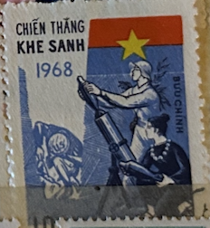
| SOURCE | TITLE| IMAGE MATCH | click to source page |
| Alamy | Postage stamp from (north) Vietnam depicting a mortar crew Stock Photo - Alamy | 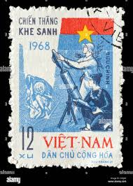 |
| In 1969 Vietnam put propaganda on it's stamps celebrating the Tet Offensive as a method of spreading their cause overseas. : r/PropagandaPosters | 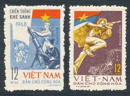 | |
| eBay | F3235 VIETNAM 1968 SOLDIERS, FLAG, FIRST DAY STAMPS - BLOCK OF 4 | eBay | 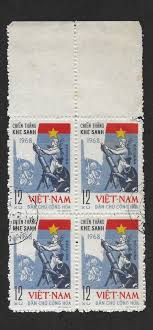 |
| Dreamstime.com | Postage Stamp Printed in Vietnam Shows Lenin, Revolutionary Soldiers, 50th Anniversary of Great October Revolution 1917 - 1967 Editorial Image - Image of 1917, letter: 169951090 | 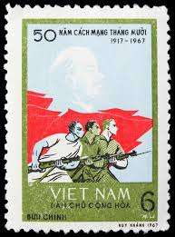 |
| WordPress.com | North Vietnam Propaganda Stamps – The Thrifty Traveller | 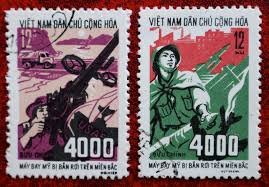 |
| BoardGameGeek | Ap Bac 1963: the small battle that had a huge impact on the Vietnam War | BoardGameGeek | 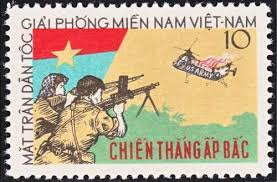 |
| eBay | 1969 North Vietnam Stamps Liberation of Hanoi Scott # 557-558 Cto NH | eBay | 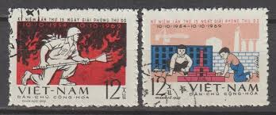 |
| eBay | Viet Nam Cong Hoa Stamp | eBay | 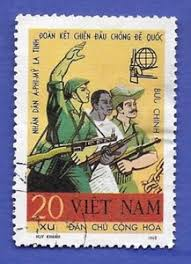 |
| eBay | Historical Events Vietnamese Stamps for sale | eBay |  |
| Shutterstock | Vietnam Circa 1972 Stamp Printed Vietnam Stock Photo 133158461 | Shutterstock | 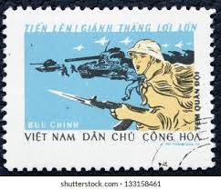 |
| Stamp Bears | Vietnam Stamps by tomd | Stamp Bears | 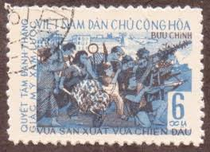 |
| Alamy | KHARKIV, UKRAINE - MAY 3, 2020: Vintage stamp printed by Vietnam, shows a soldier with a red communist flag, circa 1974 Stock Photo - Alamy | 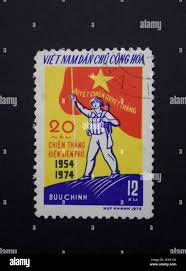 |
| 나무위키 | pressure battle - NamuWiki | 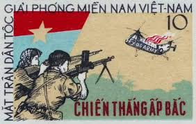 |
| HipStamp | Democratic Republic of Viet Nam 1986 Scott #1723 Mint NGAI Never Hinged | Asia - Vietnam, General Issue Stamp / HipStamp | 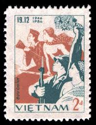 |
| eBay | PF Vietnamese Stamps for sale | eBay | 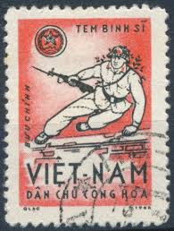 |
| allnumis.com | 12 Xu - 20th Anniversary of the Victory of Dien Bien Phu, 1974 - North Vietnam - Stamp - 29320 | 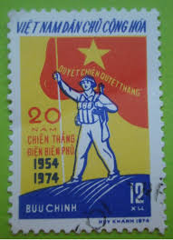 |
| Colnect | Stamp: Nam Ngãi Leads in Defeating Americans (Vietnam(Victories in South Vietnam) Mi:VN 563,Sn:VN 536,Yt:VN-N 623,Sg:VN N561 📮 | 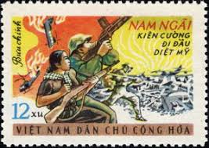 |
| Foreign Policy in Focus | Stamps Capture Unchanging Face of U.S. Violence Abroad - FPIF | 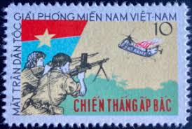 |
| Shutterstock | 7 Wftu Royalty-Free Images, Stock Photos & Pictures | Shutterstock | 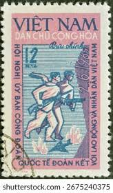 |
| Amazon.com | Amazon.com: Vietnam Stamps - 1959, Sc 109, VN Code # 61, 15th Founding anniv. of Vietnamese People?????s Army, MNH, F-VF : Toys & Games | 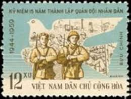 |
| eBay | Mint Never Hinged/MNH Vietnamese Aviation Postal Stamps for sale | eBay | 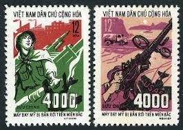 |
| Dreamstime.com | Postage Stamp Vietnam, 1986. Ho Chi Minh, Map, Line of Voters and Ballot Box Editorial Stock Image - Image of pictogram, heritage: 232531074 | 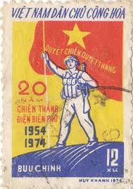 |
| eBay | 1969 North Vietnam Stamps Tet Offensive Battles Scott # 552 - 556 MNH | eBay | 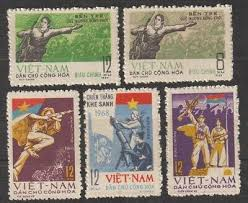 |
| Stamp Community Forum | Vietnam Postal History During The Vietnam War - Page 7 - Stamp Community Forum | 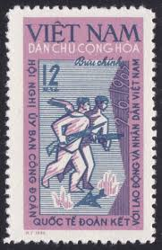 |
| Alamy | Postage stamp from North Vietnam depicting an American airplane pilot captured by a local militia Stock Photo - Alamy | 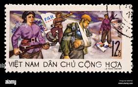 |
| Freestampcatalogue.com | Stamps from Vietnam - Freestampcatalogue.com - The free online stampcatalogue with over 500.000 stamps listed. | 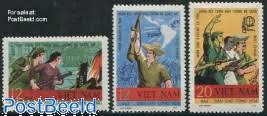 |
| Alamy | Two Soldiers In Vietnam Stock Photo - Alamy | 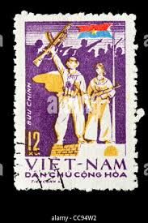 |
| Pixabay | 20+ Free Cong & Vietnam Photos - Pixabay | 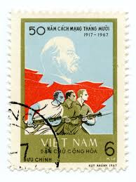 |
| Alamy | North vietnamese army hi-res stock photography and images - Alamy | 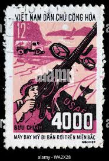 |
| lastdodo.com | Stamps from Vietnam [1963-1976] - Viet Cong Stamp catalogue - LastDodo | 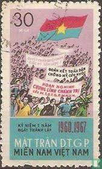 |
| Dreamstime.com | Cuban Postage Stamp Shows American Kestrel Falco Sparverius, 100th Anniversary of Death of R. De La Sagra Serie, Circa 1971 Editorial Stock Image - Image of letter, correspondence: 102026794 | 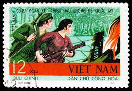 |
| Dreamstime.com | Art Work of Three Burning Candils Done with Oil Pastels Stock Image - Image of work, three: 165449655 | 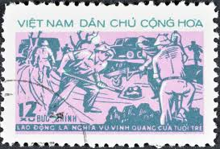 |
| Redbubble | Vintage Vietnam Propaganda Postage Stamp" Poster for Sale by red-amber65 | Redbubble | 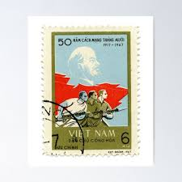 |
| HipStamp | Vietnam-1990 Centenary of HO CHI Minh CTO Very Fine WE Ship to World Wide | Asia - Vietnam, Stamp / HipStamp | 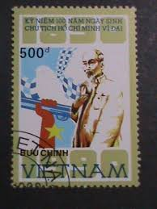 |
| eBay | 1981 Vietnam Stamps Communist Party Congress Scott # 1115 MNH | eBay | 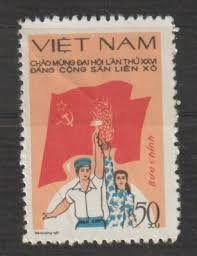 |
| Alamy | Soldiers shooting down US aircraft, Vietnam war, postage stamp, Vietnam, 1969 Stock Photo - Alamy | 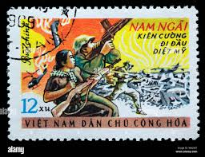 |
| vietnamnews.vn | Author, collector devotes time to restoring imperial crowns | 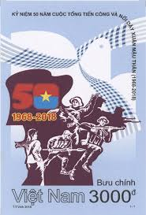 |
| UNC.UA | марка вьетнам хо ши мин 1968 1969 лот 5 шт №2962 купить на | Аукціон для колекціонерів UNC.UA UNC.UA | 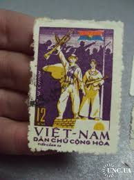 |
| eBay | Vietnam NLF Vietcong 1963: Ap Bac Victory Michel / Scott 4-5 MNH NGAI | eBay | 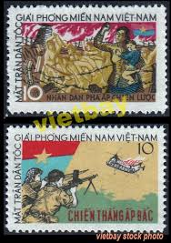 |
| postbeeld.com | Stamp 1969, Vietnam 15 years liberation of Hanoi 2v, 1969 - Collecting Stamps - PostBeeld - Online Stamp Shop - Collecting | 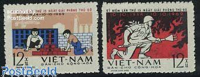 |
| Alamy | VIETNAM - CIRCA 1968: a stamp printed in Vietnam shows Asian, African and Latin American soldiers, foreign solidarity with Vietnam, circa 1968 Stock Photo - Alamy |  |
| eBay | Vietnam War Viet Kong Buttle against US Airforce stamp 1965 | eBay | 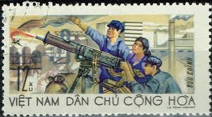 |
| eBay | Vintage, Vietnamese, communist poster, 19x 13 inches | eBay | 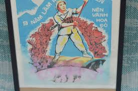 |
| UNC.UA | марка вьетнам хо ши мин 1968 1969 лот 5 шт №2962 купить на | Аукціон для колекціонерів UNC.UA UNC.UA | 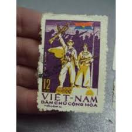 |
| Michelle Robin La | A Short History of South Vietnam Through Stamps - Michelle Robin La | 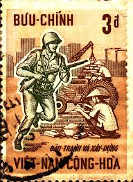 |
| eBay | N.169 -Vietnam- 20th Anniv of August Revolution | eBay | 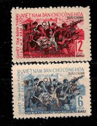 |
| eBay | Military, War Postage Vietnamese Stamps for sale | eBay | 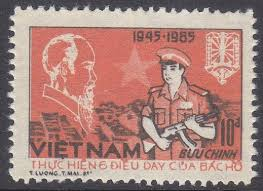 |
| Shutterstock | Vietnam Circa 1979 Stamp Printed Vietnam Stock Photo 222916654 | Shutterstock | 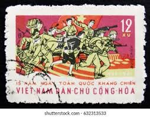 |
| Alamy | Antique correspondence hi-res stock photography and images - Alamy | 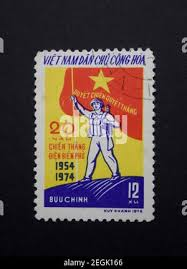 |
| Todocolección | vietnam 918/24** - año 1988 - dibujos infantile - Buy Antique stamps of Vietnam on todocoleccion | 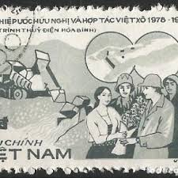 |
| Tripod (Lycos) | VietNam, 1958 Stamp Year-Page 1 of 2 | 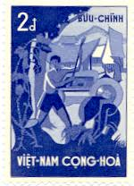 |
| seemystamps.com | See My Stamps! - A Place to Show Off Your Stamp Collection | Page 5 | |
| Hypotheses – Academic blogs | Tuong Vu | Mémoires d'Indochine | |
| Stamp Community Forum | Vietnam Postal History During The Vietnam War - Page 9 - Stamp Community Forum | |
| Vietnam Propaganda Art Posters | Ready! - Vietnam Propaganda Art Posters | |
| eBay | Vietnam War Battle scene Antiaircraft Unit stamp 1966 A-2 | eBay | |
| Alamy | VIETNAM - CIRCA 1969: a stamp printed in Vietnam dedicated to Bertrand Russell International War Crimes Tribunal, Stockholm and Roskilde, circa 1969 Stock Photo - Alamy | |
| Dreamstime.com | Women Militia, 4000 American Aircraft Brought Down Over North Vietnam Editorial Photo - Image of stamp, plane: 360172596 | |
| eBay | Vietnam War Viet Kong Buttle against US Army stamp 1965 | eBay |